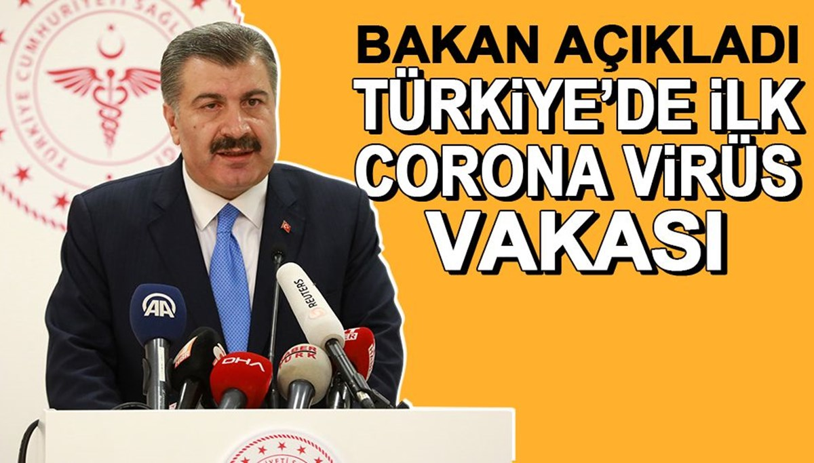
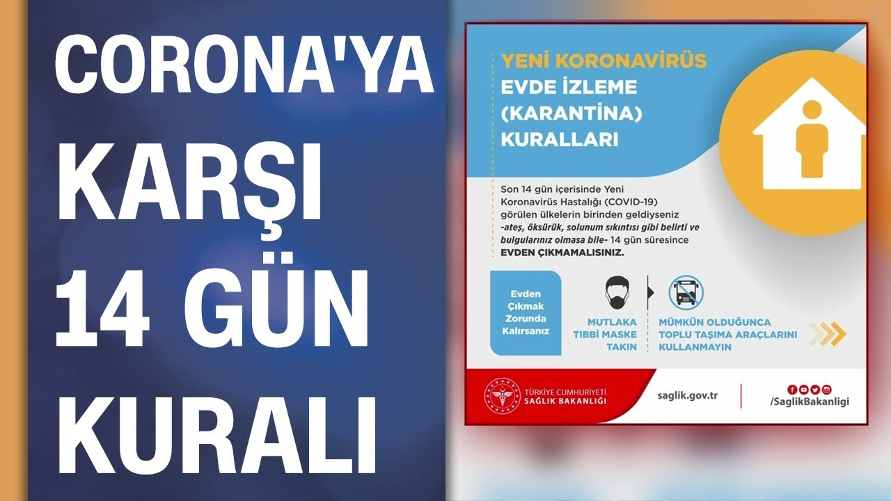
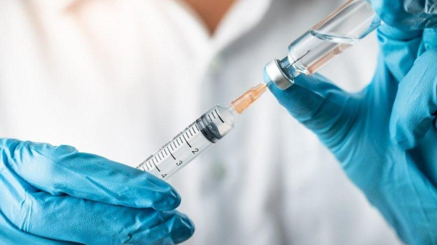

Sağlık Bakanı Fahrettin Koca, Türkiye'de ilk koronavirüs vakasının tespit edildiğini açıkladı. Koca, koronavirüs tespit edilen kişinin karantina altına alındığını durumunun iyi olduğunu belirtti.
Sağlık Bakanı Fahrettin Koca, "Hastanın virüsü, Avrupa teması üzerinden aldığı bilinmektedir. Dış dünyadan tamamen izole edilmiştir. Verilere göre tanı erken konmuştur, virüs bulaşmışsa bu çok sınırlıdır. Hasta bir erkektir ve genel durumu iyidir. Aile bireylerinin hepsi ve yakın çevresindeki tüm bireyler gözetim altındadır." ifadelerini kullandı.
Evden çıkmak zorunda kalınırsa mutlaka maske takılması ve mümkün olduğunca toplu taşıma araçlarının kullanılmaması çağrısında bulunulan paylaşımda, evde yapılması gerekenler de şöyle sıralandı:

- Yurt dıșına çıkmayın. Seyahatlerinizi iptal edin ya da erteleyin.
- Çıktıysanız, dönüște ilk on dört günü evde geçirin.
- Aile üyelerini korumak için evde kendinizi izole edin.
- Evde geçen süre boyunca ziyaretçi kabul etmeyin.
- İzole edilmiș kișinin odasına maskesiz girmeyin.
- Odanızı sık sık havalandırın
- İnsanlarla, özellikle yașlılar ve kronik hastalıkları olanlarla temas kurmaktan kaçının.
- Ellerinizi sık sık, su ve sabun ile en az yirmi saniye boyunca ovarak yıkayın.
- Kapı kolları, armatürler, lavabolar gibi sık kullandığınız yüzeyleri su ve deterjanla her gün temizleyin.
- Havlu gibi kișisel eșyalarınızı ortak kullanmayın.
- Kıyafetlerinizi 60-90OC’de normal deterjanla yıkayın.
- Bol sıvı tüketin, dengeli beslenin, uyku düzeninize dikkat edin.
- Evden çıkmak zorunda kalırsanız mutlaka maske takın.
- Düșmeyen ateș, öksürük ve nefes darlığınız varsa, maske takarak bir sağlık kurulușuna bașvurun.
Aşı sonrasında sık olarak karşılaşılabilecek durumlar ve bu hafif durumlara yönelik destekleyici yaklaşımlar şunlardır:

- • Aşı uygulanan bölgede ağrı/şişlik/kızarıklık Aşı uygulanan kolunuza yüksekte olacak şekilde pozisyon veriniz. Soğuk uygulama yapınız. (Örnek: Soğuk suyla ıslatılmış bir havlunun aşı yapılan bölgeye uygulanması vb. Bu sırada cilde doğrudan buz temas ettirilmesinden kaçınılmalıdır.) Parasetamol içeren ağrı kesiciler kullanılabilir.
- • Yorgunluk İstirahat ediniz, yeterli sıvı aldığınızdan emin olunuz.
- • Hafif ateş, titreme İstirahat ediniz, yeterli sıvı aldığınızdan emin olunuz, parasetamol içeren ağrı kesiciler kullanabilirsiniz.
- • Baş ağrısı Parasetamol içeren ağrı kesiciler kullanabilirsiniz.
- İzole edilmiș kișinin odasına maskesiz girmeyin.
- • Kas/eklem ağrısı İstirahat ediniz, yeterli sıvı aldığınızdan emin olunuz, parasetamol içeren ağrı kesiciler kullanabilirsiniz.
- • Kusma, ishal Bol sıvı takviyesi yapabilirsiniz, beslenmenizi ishal diyetine uygun olarak düzenleyebilirsiniz. Ağızdan sıvı ve gıda alınamayacak kadar kusma olması durumunda sıvı kaybı olabileceğinden sağlık kuruluşuna başvurunuz.
Korona virüs tedbirleri kapsamında hafta içi akşam saat 21.00'dan sonra hafta sonu da tüm gün getirilen sokağa çıkma yasağı uygulanmaya başlamıştı. Yasağın korona virüs vaka sayılarında düşüş sağlamasının ardından yasakların ne zaman biteceği, kafe ve restoranların ne zaman açılacağı merak konusu oldu. Konuyla ilgili Bilim Kurulu Üyesi açıklamalarda bulundu.

Sağlık Bakanlığı Toplum Bilimleri Kurulu üyesi Prof. Dr. Mustafa Necmi İlhan, sokak kısıtlamalarının etkisinin çok güçlü olduğunu gözlemlediklerini belirterek, "Hasta sayısı yaklaşık 1 aylık süreçte 7 binden 1500 civarına düştü. Aşının ilk dozunun yapılacağı zamanı 15 Ocak gibi düşünsek, ikinci doz 28 gün sonra yapılacak, buna göre 15 Şubat sonrasında kısıtlamaların kaldırılmasını düşünmek daha uygun olacaktır" dedi. Prof. Dr. İlhan, hasta sayısı binin altına düşerse okulların da açılabileceğini belirtti.